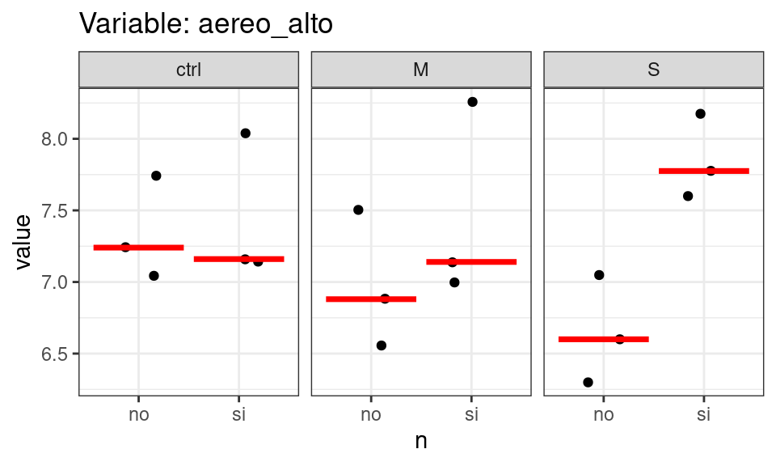
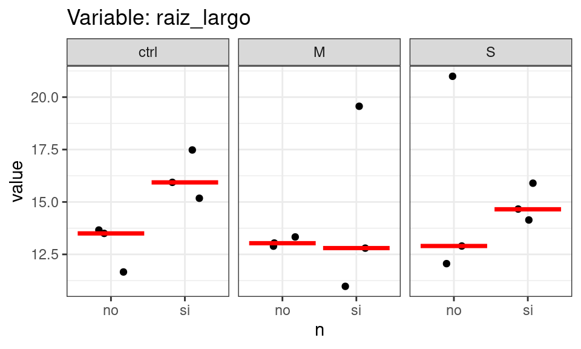
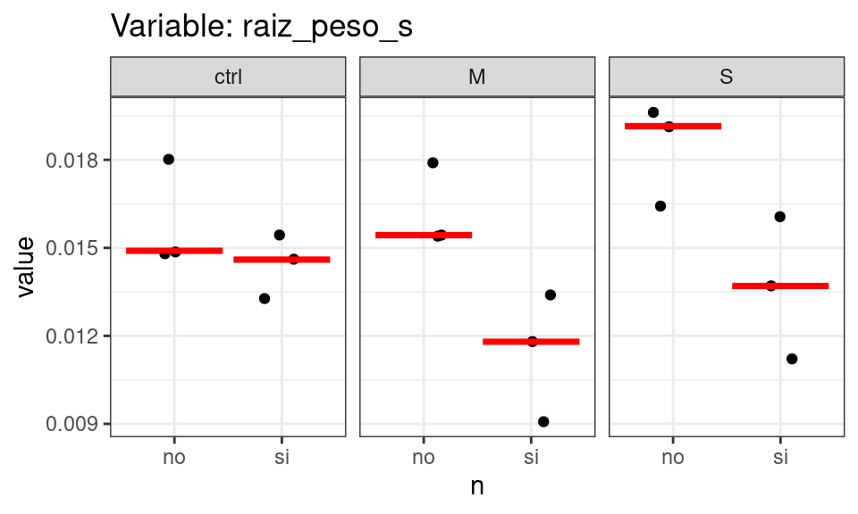
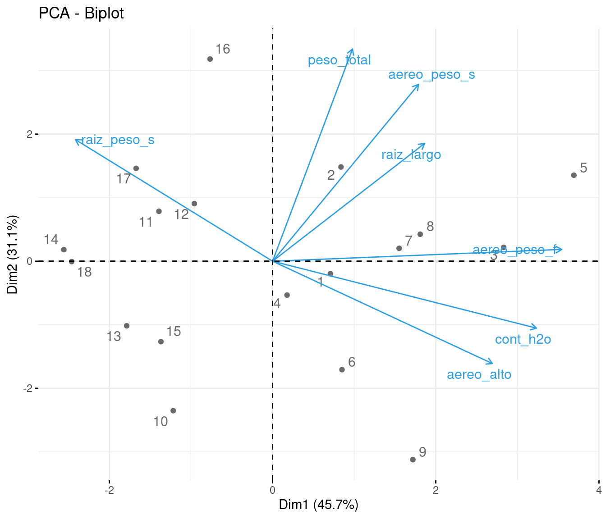

Invernaculo meme
| trat | n | bacteria | bq | aereo_alto | aereo_peso_f | aereo_peso_s | raiz_largo | raiz_peso_s | peso_total | cont_h2o |
|---|---|---|---|---|---|---|---|---|---|---|
| NBo | si | ctrl | A | 7.14 | 0.16 | 0.0319 | 15.2 | 0.0133 | 0.0477 | 80.4 |
| NBo | si | ctrl | B | 7.16 | 0.186 | 0.0369 | 17.5 | 0.0154 | 0.0518 | 77.2 |
| NBo | si | ctrl | C | 8.04 | 0.219 | 0.0317 | 15.9 | 0.0146 | 0.0566 | 83.8 |
| NBM | si | M | A | 7 | 0.153 | 0.0322 | 12.8 | 0.0134 | 0.0461 | 80.2 |
| NBM | si | M | B | 8.26 | 0.218 | 0.0421 | 19.6 | 0.0118 | 0.0556 | 80.3 |
| NBM | si | M | C | 7.14 | 0.188 | 0.0331 | 11 | 0.0091 | 0.0408 | 78.9 |
| NBS | si | S | A | 7.78 | 0.197 | 0.0343 | 14.7 | 0.016 | 0.0503 | 81.2 |
| NBS | si | S | B | 7.6 | 0.209 | 0.0375 | 14.1 | 0.0137 | 0.0512 | 79.8 |
| NBS | si | S | C | 8.18 | 0.192 | 0.0244 | 15.9 | 0.0112 | 0.0324 | 81.4 |
| Bo | no | ctrl | A | 7.74 | 0.116 | 0.0218 | 13.5 | 0.0148 | 0.0365 | 76.7 |
| Bo | no | ctrl | B | 7.24 | 0.131 | 0.034 | 11.7 | 0.018 | 0.0512 | 74.9 |
| Bo | no | ctrl | C | 7.04 | 0.115 | 0.0357 | 13.7 | 0.0149 | 0.0515 | 75.1 |
| BM | no | M | A | 6.88 | 0.101 | 0.0259 | 13.3 | 0.0154 | 0.0413 | 77.1 |
| BM | no | M | B | 6.56 | 0.113 | 0.027 | 13 | 0.0179 | 0.046 | 74.2 |
| BM | no | M | C | 7.5 | 0.121 | 0.0272 | 12.9 | 0.0154 | 0.04 | 75.2 |
| BS | no | S | A | 6.3 | 0.148 | 0.036 | 21 | 0.0192 | 0.0547 | 75.2 |
| BS | no | S | B | 6.6 | 0.116 | 0.0364 | 12.9 | 0.0164 | 0.0524 | 74.2 |
| BS | no | S | C | 7.05 | 0.112 | 0.0265 | 12.1 | 0.0196 | 0.0467 | 74.8 |
1 Variables originales
[[1]]
[[2]]
[[3]]
[[4]]
[[5]]
[[6]]
[[7]]<list_of<
tbl_df<
name : character
term : character
df : integer
sumsq : double
meansq : double
statistic: double
p.value : double
>
>[7]>
[[1]]
# A tibble: 4 × 7
name term df sumsq meansq statistic p.value
<chr> <chr> <int> <dbl> <dbl> <dbl> <dbl>
1 aereo_alto bacteria 2 0.100 0.0502 0.226 0.801
2 aereo_alto n 1 1.61 1.61 7.26 0.0195
3 aereo_alto bacteria:n 2 0.924 0.462 2.09 0.167
4 aereo_alto Residuals 12 2.66 0.221 NA NA
[[2]]
# A tibble: 4 × 7
name term df sumsq meansq statistic p.value
<chr> <chr> <int> <dbl> <dbl> <dbl> <dbl>
1 aereo_peso_f bacteria 2 0.000553 0.000276 0.644 0.543
2 aereo_peso_f n 1 0.0233 0.0233 54.4 0.00000859
3 aereo_peso_f bacteria:n 2 0.0000385 0.0000193 0.0449 0.956
4 aereo_peso_f Residuals 12 0.00515 0.000429 NA NA
[[3]]
# A tibble: 4 × 7
name term df sumsq meansq statistic p.value
<chr> <chr> <int> <dbl> <dbl> <dbl> <dbl>
1 aereo_peso_s bacteria 2 0.00000478 0.00000239 0.0819 0.922
2 aereo_peso_s n 1 0.0000635 0.0000635 2.18 0.166
3 aereo_peso_s bacteria:n 2 0.0000768 0.0000384 1.32 0.304
4 aereo_peso_s Residuals 12 0.000350 0.0000292 NA NA
[[4]]
# A tibble: 4 × 7
name term df sumsq meansq statistic p.value
<chr> <chr> <int> <dbl> <dbl> <dbl> <dbl>
1 cont_h2o bacteria 2 0.435 0.217 0.0834 0.920
2 cont_h2o n 1 117. 117. 45.0 0.0000218
3 cont_h2o bacteria:n 2 2.45 1.22 0.470 0.636
4 cont_h2o Residuals 12 31.3 2.60 NA NA
[[5]]
# A tibble: 4 × 7
name term df sumsq meansq statistic p.value
<chr> <chr> <int> <dbl> <dbl> <dbl> <dbl>
1 peso_total bacteria 2 0.0000573 0.0000287 0.594 0.568
2 peso_total n 1 0.00000825 0.00000825 0.171 0.687
3 peso_total bacteria:n 2 0.000144 0.0000720 1.49 0.264
4 peso_total Residuals 12 0.000579 0.0000483 NA NA
[[6]]
# A tibble: 4 × 7
name term df sumsq meansq statistic p.value
<chr> <chr> <int> <dbl> <dbl> <dbl> <dbl>
1 raiz_largo bacteria 2 5.45 2.72 0.338 0.720
2 raiz_largo n 1 8.73 8.73 1.08 0.319
3 raiz_largo bacteria:n 2 10.1 5.04 0.625 0.552
4 raiz_largo Residuals 12 96.8 8.07 NA NA
[[7]]
# A tibble: 4 × 7
name term df sumsq meansq statistic p.value
<chr> <chr> <int> <dbl> <dbl> <dbl> <dbl>
1 raiz_peso_s bacteria 2 0.0000146 0.00000729 2.19 0.155
2 raiz_peso_s n 1 0.0000604 0.0000604 18.1 0.00111
3 raiz_peso_s bacteria:n 2 0.0000109 0.00000544 1.63 0.236
4 raiz_peso_s Residuals 12 0.0000400 0.00000333 NA NA 2 Variables escaladas
0 = media general
3 Relacion entre variables
